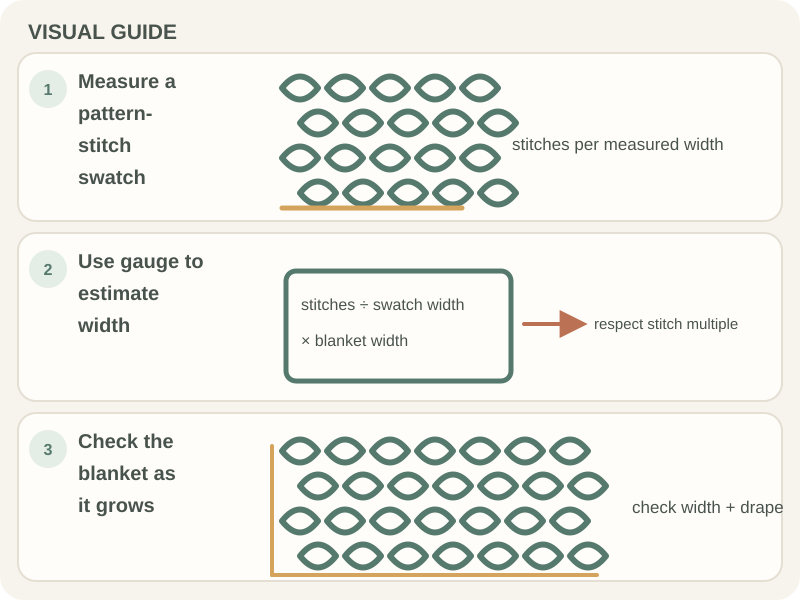

Beginner Projects · Beginner guide
How to Crochet a Simple Blanket as a Beginner
A simple blanket is a large rectangle, so a small gauge swatch helps estimate width, row count, and yarn before you begin.

Short answer: A simple blanket is a large rectangle, so a small gauge swatch helps estimate width, row count, and yarn before you begin.
This is a planning guide rather than a fixed-size pattern. Choose a stitch you can repeat and a size that feels manageable for your first large project.
Before you begin
Check the pattern’s yarn and care recommendations. Make a swatch, measure it, and estimate yarn from the pattern or a tested yardage guide.
Step-by-step instructions
Use this flexible rectangle plan with the stitch specified by your pattern; the swatch determines the starting count.
- Choose the finished width, yarn, and stitch. Make a swatch and count stitches per inch.

Real crochet photograph by Rahime Gül via Pexels. - Use the swatch to estimate a foundation-chain length for the chosen width; account for any stitch multiple in the pattern.
- Work rows to the planned length, following the pattern’s turning-chain rule and counting every row.
- Lay the blanket flat after several rows. Check width, edge stitch count, drape, and remaining yarn before continuing.

How to check your work
Lay the blanket flat at intervals and compare its width and length with your plan. Check the edge count and make sure the fabric still has the drape you want.
Common beginner problems
- The blanket gets wider: Count each row and mark the first and last stitch; extra edge stitches accumulate over a large piece.
- The blanket is heavier than expected: Try a smaller swatch and consider a lighter yarn or working in panels before continuing.
- The yarn estimate is low: Recheck yardage, gauge, and dimensions; replacement dye lots may differ in shade.
Plan before the large project
A swatch is especially useful for a blanket because small gauge differences compound across many stitches. Keep the yarn labels and buy from matching dye lots where possible.
Frequently asked questions
What is a good first blanket size?
Choose a manageable size for your available time and yarn; there is no single beginner size.
How much yarn will I need?
Use the pattern estimate, yardage per skein, gauge, and finished dimensions.
Should I make a gauge swatch?
Yes, if size, drape, or yardage matters; a small swatch is easier to adjust than a finished blanket.